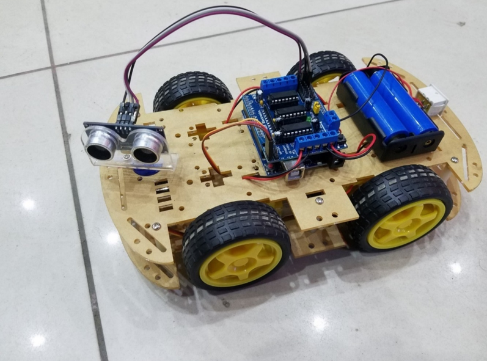
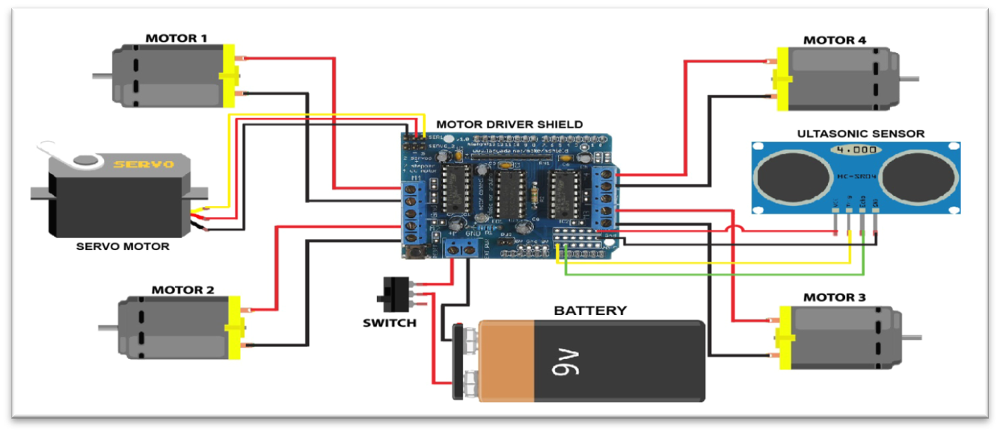
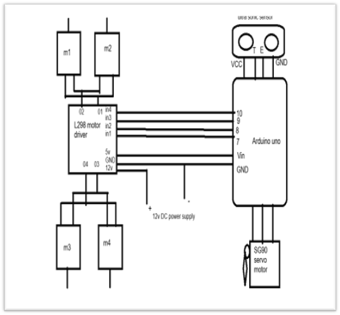

An autonomous robotic vehicle built using Arduino UNO, HC-SR04 Ultrasonic Sensor and Servo Motor for intelligent obstacle detection and automatic navigation.

The Arduino-based Obstacle Avoiding Car is an autonomous robot that continuously scans its surroundings using an HC-SR04 Ultrasonic Sensor mounted on a Servo Motor. Whenever an obstacle is detected, the Arduino UNO processes the measured distance and intelligently changes the movement direction of the vehicle to avoid collisions without any human intervention.
Main controller of the robot.
Measures distance to nearby obstacles.
Rotates the ultrasonic sensor for scanning.
Controls the DC motors.
Provides forward and reverse movement.
The ultrasonic sensor continuously emits ultrasonic waves and calculates the distance by measuring the echo time. If an obstacle is detected within the predefined threshold, the Arduino immediately stops the vehicle, scans both sides using the Servo Motor, compares the available paths, and moves in the safest direction automatically.


🟢 Power Supply : ONLINE
🟢 Ultrasonic Sensor : ACTIVE
🟢 Servo Motor : ACTIVE
🟢 Motor Driver : READY
🟢 Autonomous Navigation : ENABLED